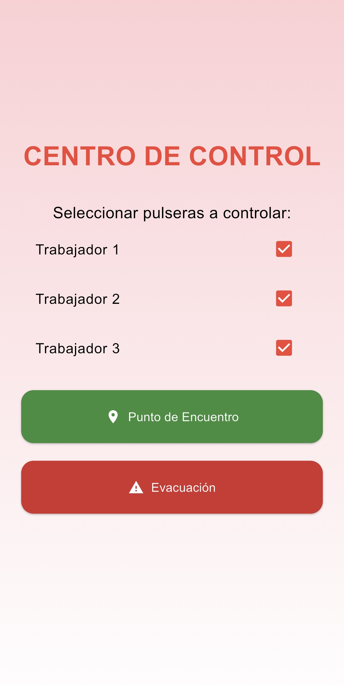
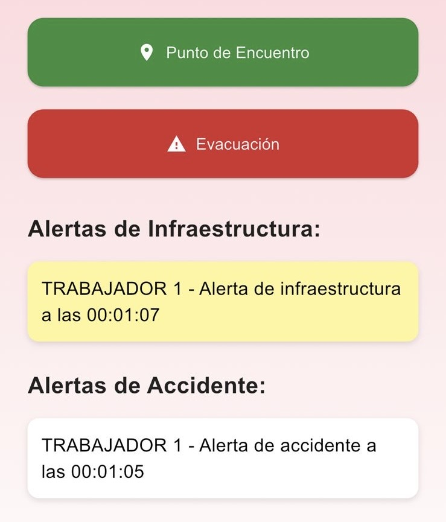

¿Qué es OBRYX?
OBRYX es una pulsera diseñada para contextos subterráneos de alta exigencia. Permite a los trabajadores enviar alertas inmediatas y recibir instrucciones críticas desde un centro de control a través de luces LED.
¿Cómo Funciona?
- Botón rojo (OBRYX): Enviar alerta de accidente
- Botón amarillo (OBRYX): Alerta de infraestructura comprometida
- Botón verde (centro de control): Reunión en punto de encuentro
- Botón rojo (centro de control): Evacuación inmediata
🆘 Accidente
⚠️ Infraestructura
✅ Reunión
❌ Evacuación
OBRYX funciona con una señal propia de Wi-Fi Mesh, donde cada pulsera actúa como un repetidor de señal garantizando así una cobertura subterránea total.
OBRYX en acción
Centro de Control

